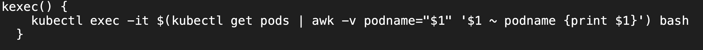
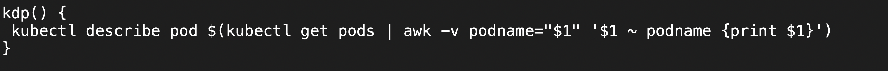
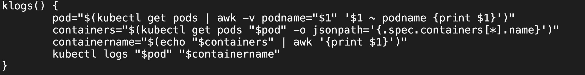
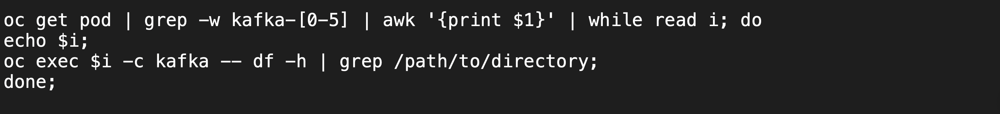
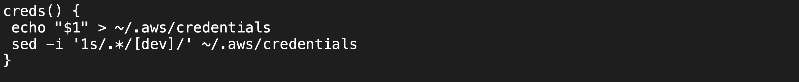

Set aliases working with EKS.
In this short post, I would like to briefly give some commands that make navigating in EKS/Openshift easier. There's not much theory in this post, only some commands using powerful tools like grep, awk, aliases, and basic EKS commands (same commands can then be applied to Openshift with minor changes, like replacing 'kubectl' with 'oc'.)
These commands can then be added to '.bashrc', which after the 'source' command would act like aliases.
'kubectl exec -it' command can be used to enter inside a container running in the pod by specifying the pod name. If we don't mention the container, Kubernetes will 'exec' into the first container defined in the configuration. This could be a Helm deployment. So in the deployment.yaml, the container that is mentioned first in the tag 'containers:', will be execed into.
A helpful alias for this is as follows:
The usage would something be like this: kexec pod_name. In the long winded route, we would first have to run 'kubectl get pods | grep pod_name'. Then copy the pod's name and paste it in 'kexec -it' command. What happens here is that there's no way you remember the pod name because it is generated by concatenation of the application name and a unique identifier which is a random string. Using this alias, you just need to know the application name and you are good to go. This saves the hassle of running 'get pods' first and the copy/ pasting bit. The -it flag opens an interactive shell session inside the container. awk is another helpful command line utility used for pattern searching. Here I am using the 'get pods' command internally, and then passing the pod's name which is the first field (hence the '$1') to the 'awk' script from the shell (by use of '-v' flag). If it matches the name passed in 'kexec pod_name', we will be able to enter inside the container.
In the same way, we use the 'kubectl describe ...' command alias to save us the hassle of copy pasting.
Just use 'kdp my_app' and you can describe the pod's current state, configuration and other metadata.
Next one is little tricky. It has to do with 'kubectl logs ...'. Here you can't get away with not mentioning the container name. So we need a way to somehow fetch the container name along with the pod name. We'll get the pod name as we've done before. For the container name, we need to revisit our 'Deployment.yaml' file. We can find the name in the tag '.spec.containers[*].name'. So this is how we do it:
The usage is klogs my_app. Instead of copy pasting the pod name and then adding a container name to kubectl logs command, you have a much quicker way of getting the logs of the container you want.
Next one is less to do with aliases. Let's imagine a scenario. You have a situation where your kafka pods are crashing due to memory issues and you have 5 kafka pod replicas where you want to 'exec' into each and run 'df -h' command to check the memory state. This will take you a lot of time and commands, 'exec-ing' into the pod, run 'df -h', exit the pod, and repeat the process. Here's a quicker way by using the power of shell scripting.
'-w' tag relates to a full word search. So you run 'get pods', search for kafka pods with 'grep' and full word search, use 'awk' to get the first field (which is the name of the pod), and then iterate over the five results, run 'df -h' and you'll have memory info printed on the screen.
The next one was very helpful to me. Every time I logged into the AWS console, I would get a new token which I had to replace in my '~/.aws/credentials' file to log into my namespace on EKS. So the process would be get the token, 'vi' into the credentials file, delete the old token, replace it with the new one, write/quit (':wq'), and then go about my business. To save myself the hassle of opening the editor every time and replacing the old token with the new one, I came up with this short useful alias.
The usage would be 'creds token'. Here I'm using the 'sed' tool, to replace the name of the profile in the copied token with my profile name.